Web app
Group project
15 mins reading
Drive aware, get there!
DriveBuddy is an AI-powered app with fatigue detection and real-time alerts to keep drivers stay safe on the road by detecting early signs of drowsiness.
Try app demo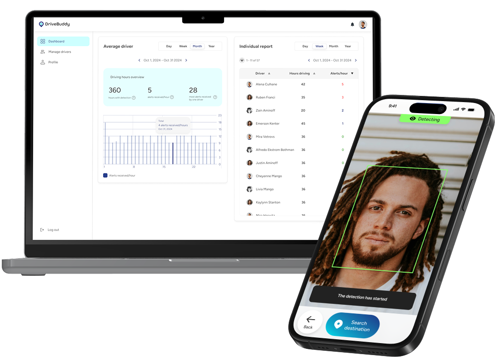
Team members
5 designers
4 developers
My role
UI/UX Designer
Lead Designer
Timeline
January - April 2025
Tools
Problem
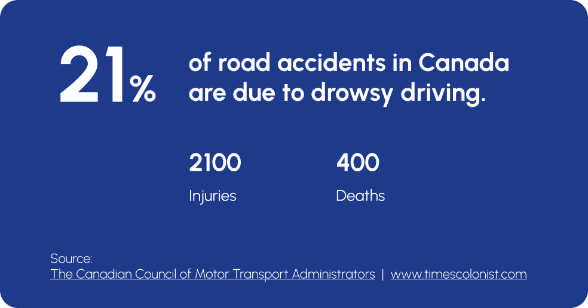
App Features
Face Detection and Alerts
GPS & Rest Stop Suggestions
Administrator Dashboard
App Demo
Interview with drivers - get to know real user’s experience
To ground the project in real user needs, I began by interviewing three long haul drivers with different routines and experience levels. These conversations helped me understand the lived reality of driving for extended hours: the physical exhaustion, the pressure of tight delivery schedules, the difficulty staying alert at night, and the personal tricks they rely on (coffee, stretching, blasting music, rolling the windows down). What stood out most was how unpredictable fatigue is; even experienced drivers can suddenly lose focus without noticing the early signs.
Design workshop - brainstorm & discover potential opportunity
With initial insights in hand, I organized a collaborative design workshop to dig deeper into the drivers’ mental models. Together, our team mapped the user journey of a typical long drive, captured emotional highs and lows, and brainstormed around moments where fatigue becomes risky. This workshop helped us uncover key opportunities: anticipating fatigue earlier, simplifying decision-making when tired, and offering support that feels calm and non-judgmental. These learnings shaped the foundation of DriveBuddy’s design direction.
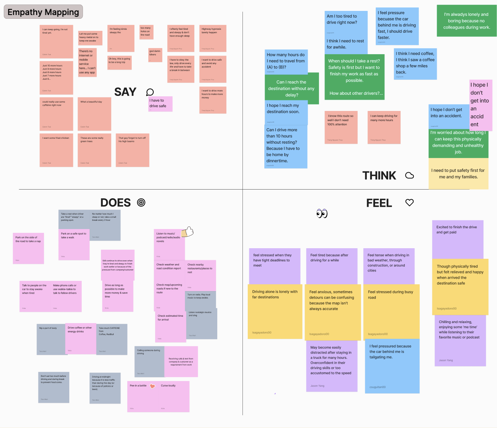
We did empathy mapping
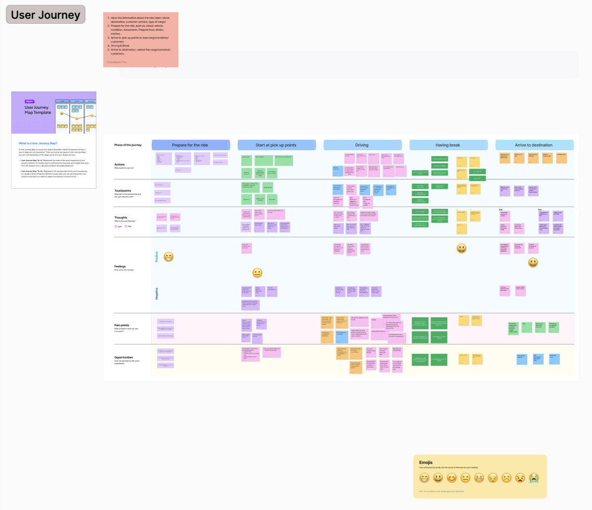
And came up with a user journey based on interviews
Whose problem we are trying to solve?
With empathy mapping and user journey, I was able to summarize these user paints points. Together with the team, we arranged it based on criticalness and the opportunities we could get out it for solving the problems with our app. Creating user personas was key to shaping DriveBuddy’s design. By identifying key user needs, frustrations, and goals, we ensured our solution addressed real pain points for both drivers and fleet admins. This guided our design decisions, keeping the app practical and effective.
What are the opportunity to enhance drive’s safety?
Building on these ideas, we identified critical pain points and summarize opportunities to improve safety, reduce cognitive load, and support drivers before fatigue turns into an accident. Here are some key notes I summarized from the workshop.
Emotional and physical challenges faced by drivers
- Drivers experience loneliness, boredom, and fatigue during long trips, which can impair focus.
- Starting again after breaks is difficult, and some wish for longer rest periods.
- Anxiety about accidents, tight deadlines, and cargo safety is common.
- Drivers often feel pressured by close traffic and worry about losing internet access.
- Physical discomforts include the monotony of paperwork, long loading times, and limited restroom access.
AI-driven safety and engagement features for drivers
- Al can automatically gather relevant information and suggest actions to improve safety and efficiency.
- The system can detect signs of driver fatigue or overconfidence and issue timely alerts.
- Face detection technology is proposed to minimize distractions by monitoring driver alertness.
- Voice control enables hands-free operation, reducing physical distractions.
- Al engages drivers through conversation, mini-games, and voice prompts to maintain focus and motivation.
Trip planning and real time driving support
- Drivers receive useful trip planning information such as weather, traffic, estimated driving and resting times, and recommended break locations.
- The app can suggest short routes and shortcuts to optimize travel time.
- GPS and routing apps provide estimated arrival times and updates on traffic or accidents.
- Drivers can verify documents and adjust work schedules based on journey conditions.
- Voice reminders inform drivers about road conditions, rest stops, and safe driving practices.
Support document and schedule management
- The app supports document verification, delivery status updates, and task details management.
- Drivers can check vehicle condition and prepare personal belongings through checklists.
- Schedule information and routing updates are integrated into the mobile app.
- The system allows communication with companies, customers, and fellow drivers via calls and texts.
- Facilitating quick reporting and adjustments to work plans due to accidents or client requests is included.
How do we differentiate ourselves from existing apps?
With our user pain points and target audience defined, we translated those needs into core features and then evaluated how DriveBuddy fits within the existing landscape. While several apps offer navigation or basic fatigue alerts, few combine real-time drowsiness detection, proactive warnings, and a dedicated admin dashboard in one place. My competitive review highlights these differences, noting that although the comparison uses shared criteria, each app ultimately serves slightly different use cases and user groups.
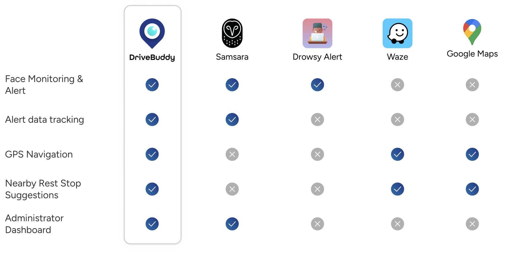
User flow
We prioritize key features and construct our user flow. To avoid users being overwhelmed, our target was to keep user flow simple and allow user to focus on the key values they need from the app, which are starting to exercise and seeing their tracking result. Below is how the high level user flow look like.
With the template I crated, our team built this user flow to lay out the blueprint for how each of the features interact. It was critical to understand the interaction between the training feature, the learning feature, and the exercise screens, as well as how user history would be tracked and recorded in the dashboard and profile.
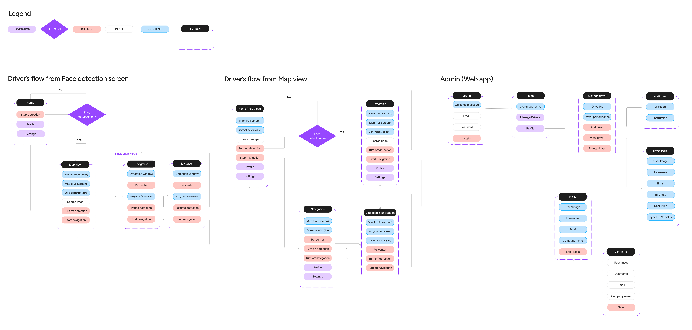
Wireframe
For DriveBuddy, I took ownership of designing the Login & Sign-Up flow and the Admin Dashboard—two areas that shape first impressions and support day-to-day safety monitoring. I always start with paper wireframes. There’s something freeing about sketching quickly, crossing things out, and trying ten layouts in five minutes before anything ever makes it into Figma. It helps me think fast, stay open, and find the version that truly serves the user.
Alongside my individual work, I also took on the role of design team lead, guiding the overall structure and ensuring consistency across everyone’s wireframes. While each designer owned different features, I coordinated our direction, aligned decisions, and helped unify our approach so the entire app felt seamless. It was a balance of designing deeply myself while supporting the team to deliver a cohesive system, something I genuinely enjoyed throughout the project.
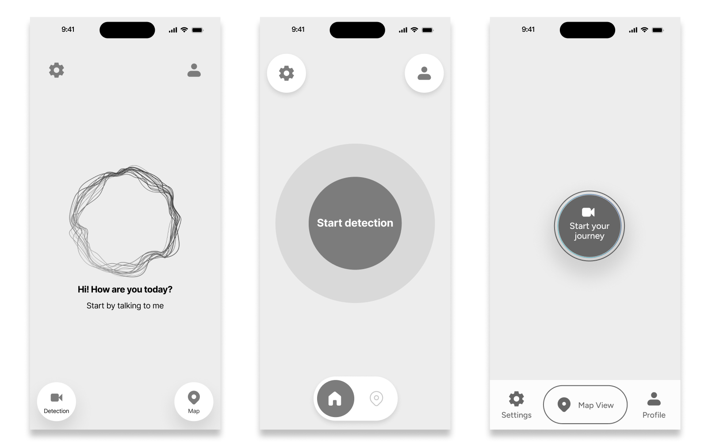
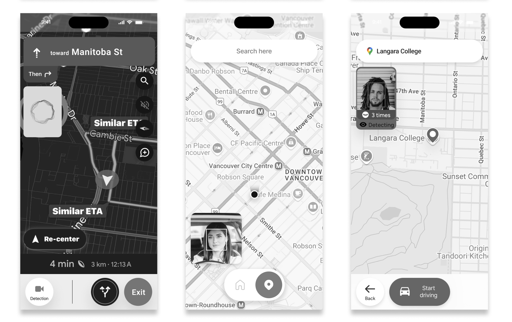
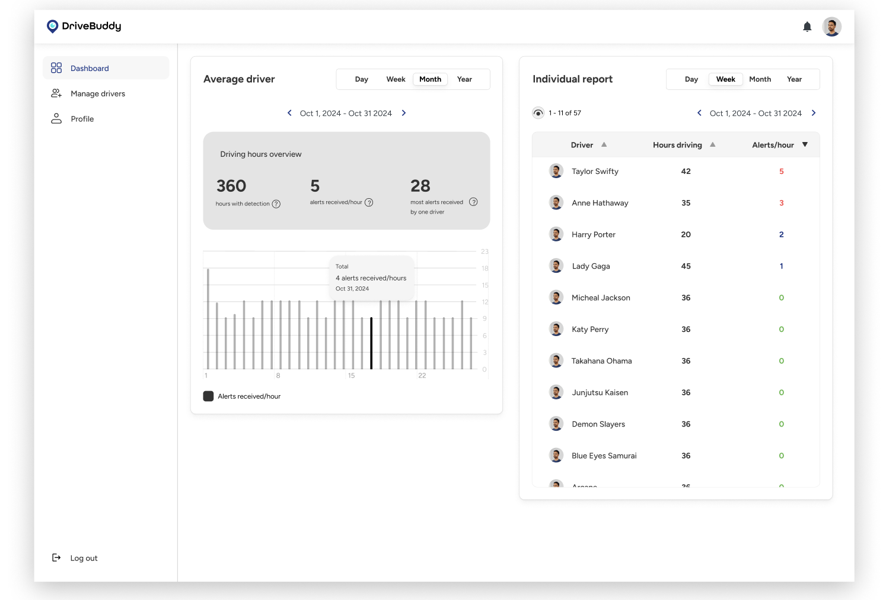
Constantly testing and iterating design
Designing for simplicity turned out to be one of our biggest challenges. Because DriveBuddy needs to be effortless for drivers, especially when they’re already tired, we had to find a flow that was minimal yet still crystal-clear and intuitive. This pushed our design team to revisit and refine our wireframes again and again, from the earliest sketches to the final mockups. In many ways, this process mirrored real world product development: constant testing, learning, and iterating. Every round of improvement brought us closer to a design that truly supports users when they need it most.
Branding & UI Kit
With our three guiding principles: Safe, Vigilant and Simple, our team developed the UI kit for DriveBuddy. After exploring moodboards and iterating through multiple logo concepts, we refined a color palette that not only reflects the app’s purpose but also meets accessibility standards.
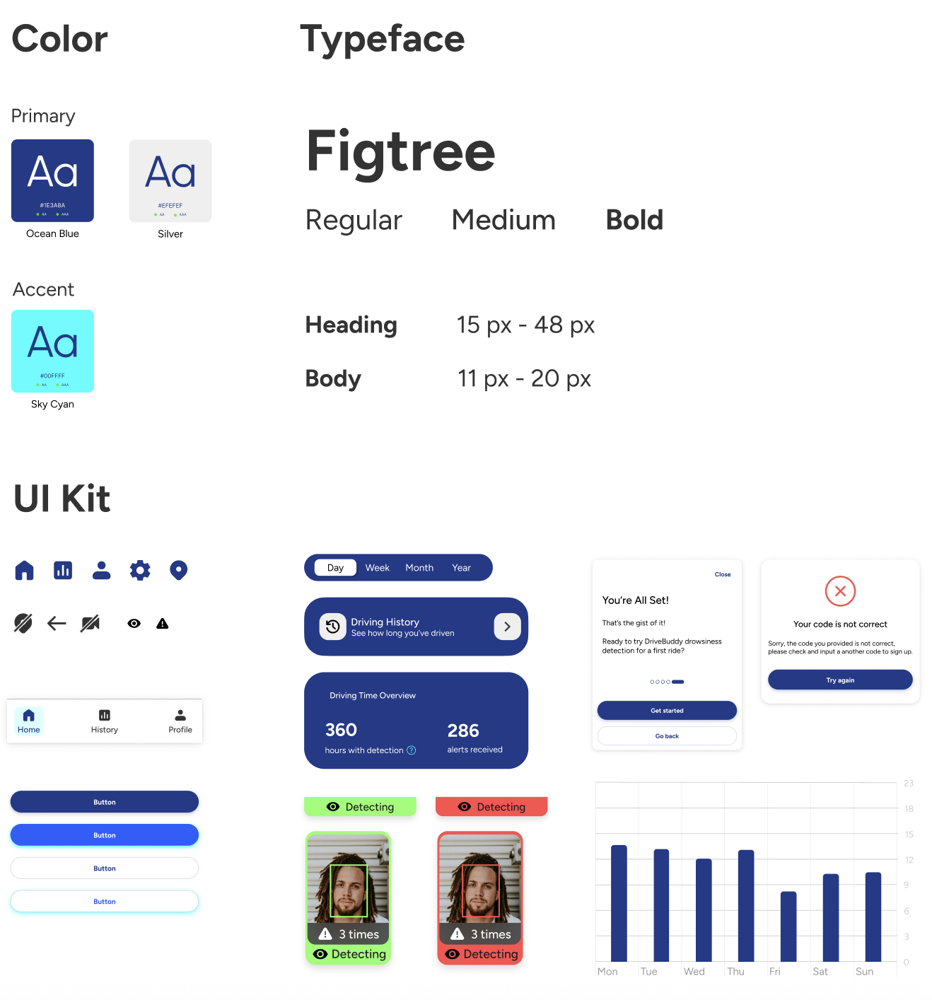
I designed logo for our app
Final logo design was created by me after brainstorming and combining ideas contributed by all team members. The logo combines a map pin icon with an open eye, representing the app’s primary feature - helping drivers stay alert and focused while driving. This design reflects both navigation and vigilance, emphasizing the app’s commitment to road safety.
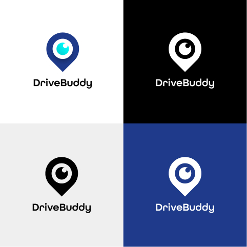
Mockups
With branding assets and components set, we built mockups while refining the component library for consistency. External feedback, including instructor reviews and usability testing, ensured user needs and technical feasibility.
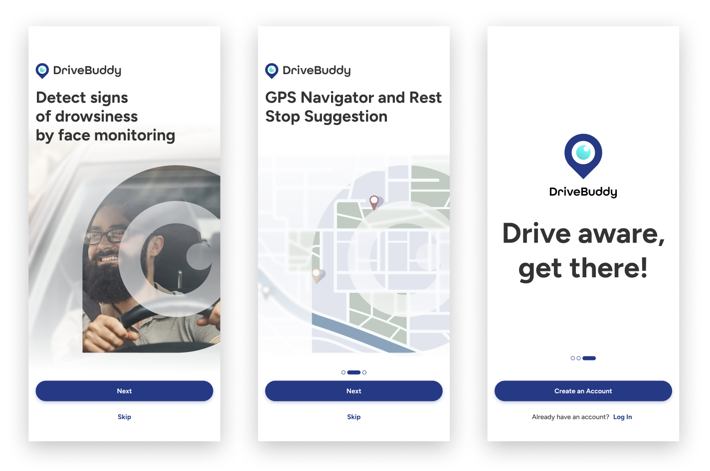
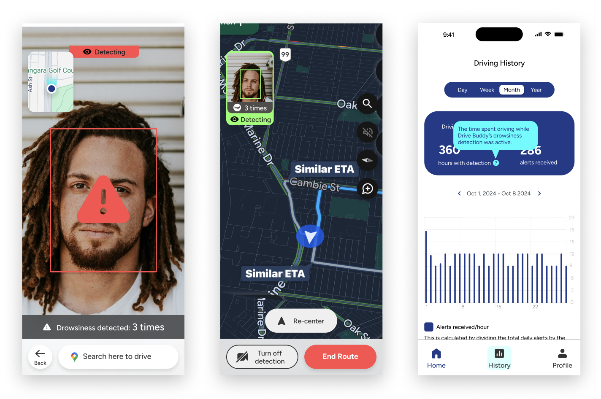
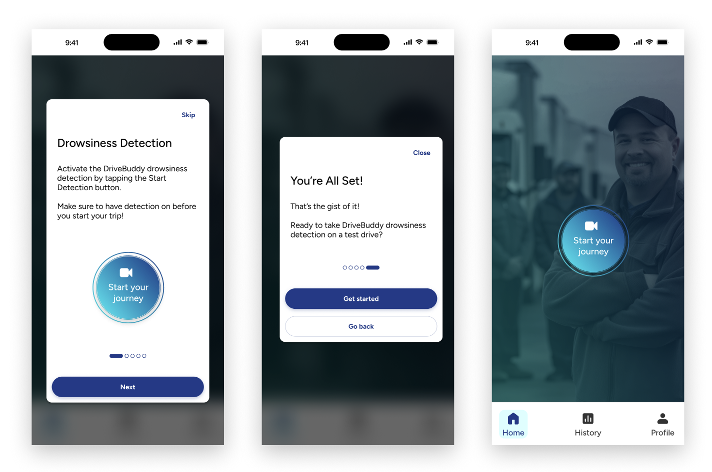
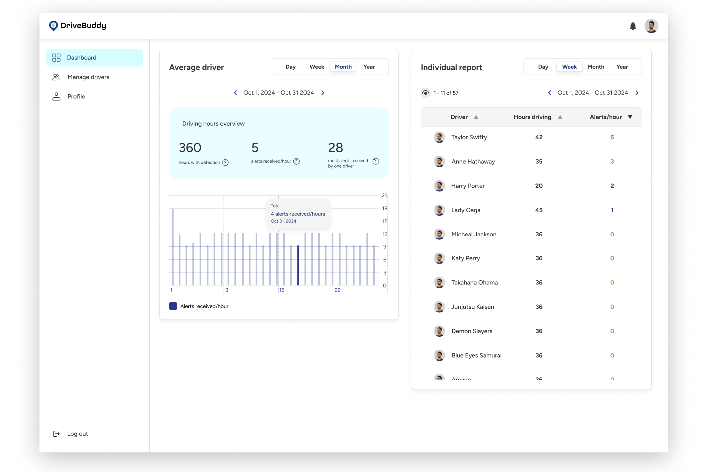
Usability testing
I conducted several quick usability tests to validate the flow and identify friction points. Testing with users early helped me refine the navigation, improve the visibility of alerts, and ensure the app stayed simple and intuitive for drivers on the road. For usability testing, we were able to test with the actual Beta build of DriveBuddy, thanks to our incredibly fast development team who delivered it ahead of schedule. This was especially important because the core experience of the app relies on real-time face tracking and fatigue alerts, which can’t be fully evaluated through static screens or prototypes. Testing with the live technology allowed us to observe how users reacted to the camera detection, alert timing, and overall flow in a more realistic driving context.
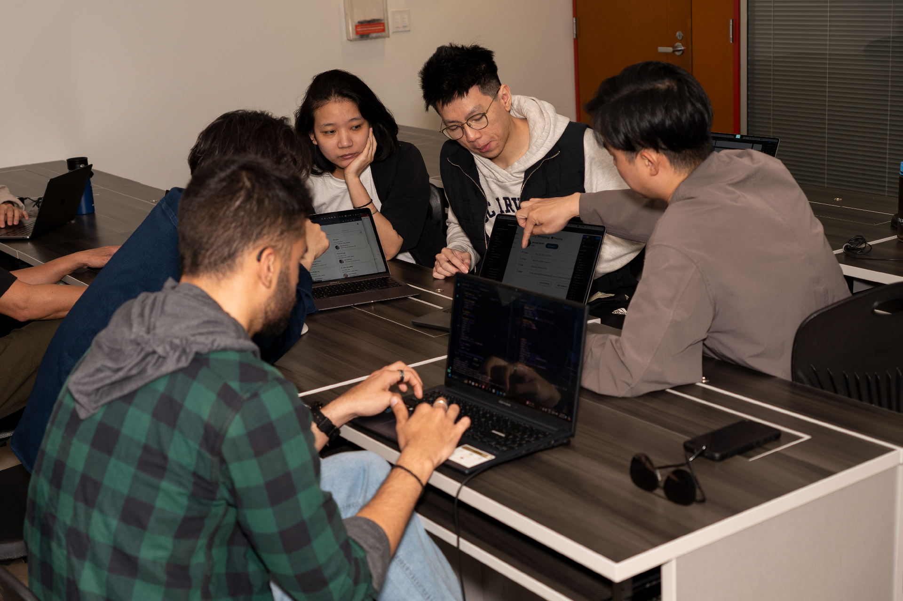
Key finding from usability test
These are the key findings from usability test. However, within the project timeline, not all findings were improved before we deliver the project final presentation. As designer lead, I work with other members and developers to prioritize issues based on the importance and time required to decide which needed to be revised first.
| Driver's flow findings | Action |
|---|---|
| The “Start your journey” button wording is vague - users might not know whether this starts navigation, detection, or both. | Use more explicit labels like “Start Detection” and “Start Driving”. |
| During navigation, there is only an “Exit” button. Without confirmation, users could accidentally exit. | Add confirmation prompts for critical actions |
| CTA buttons vary in size and shape across screens. | Standardize button styles across all screens. |
| The map view may allow interactions that distract drivers. | Limit complex map interactions while driving (lock map unless user is parked). |
| No visible error states for detection failure (e.g., camera blocked, low light). | Include inline error messages (e.g., “Camera is not detecting your face”). |
| Admin's flow findings | |
| The admin interface requires scrolling through long tables; no filters or search visible. | Include sorting, filtering, and search on admin pages. |
| Admin dashboard lacks tooltips explaining metrics (alerts/hour, driving hours). | Include an info icon explaining safety metrics on the dashboard. |
Final presentation day
DriveBuddy: Winners of Best in Show AND Development Excellence at our Capstone Showcase! I'm so proud that our team was awarded both Best in Show and Best in Development. Huge thanks to our instructors from Lanagra College. Special shoutout to our team Cre8 for sticking together through three semesters and creating three incredible projects including DriveBuddy!
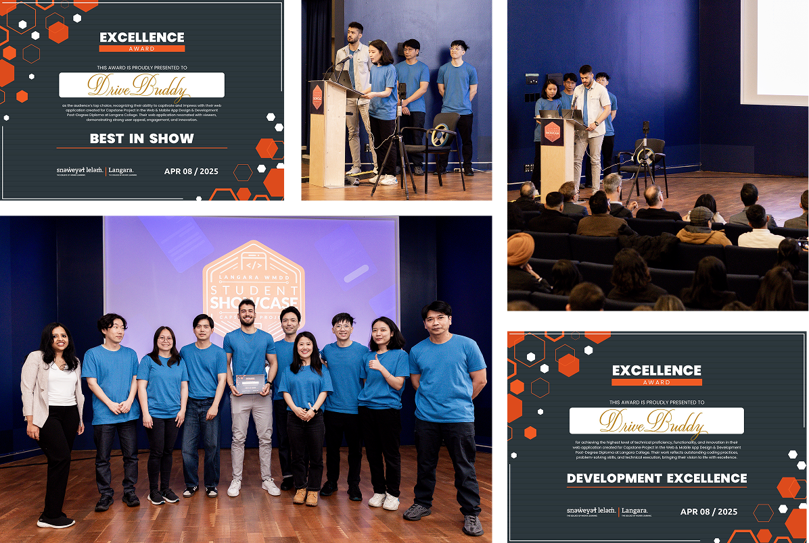
More info about how DriveBuddy came to life? Here is the proposal I designed in InDesign!
What I learned
#1 Simple is hard
Creating a minimal interface that still communicates the right information required many iterations and usability checks.
#2 Documentation and consistency are essential
When multiple designers contribute to the same product, especially in a compressed timeline. I can see that we have so much to improve in terms of UI consistency for DriveBuddy.
#3 Iterations never stop.
Even with tight deadlines, we kept improving our flows from wireframes to final mockups , just like real product teams do.
Next step
Thanks for reading!
Check out my other creations

BodyBuddy App (design)

Favr App (design)

A Zine (design)

My portfolio (design & code)

BodyBuddy website (design)

My branding (design)

Drivebuddy website (design)

Favr logo & web (design)